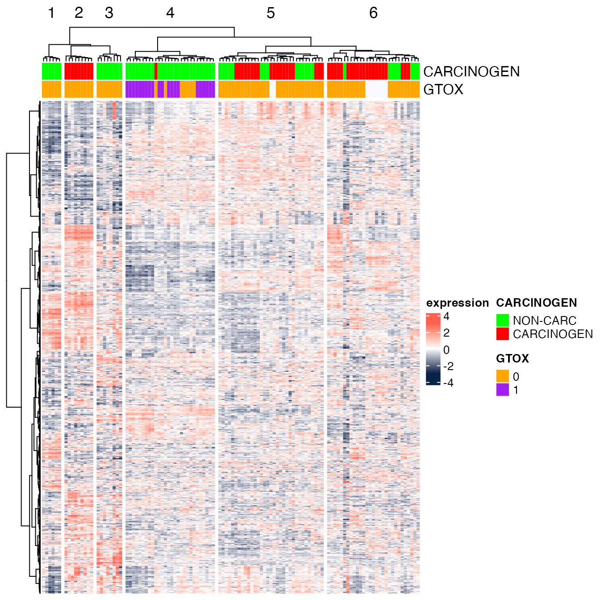
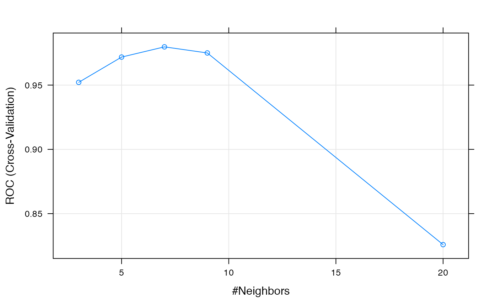
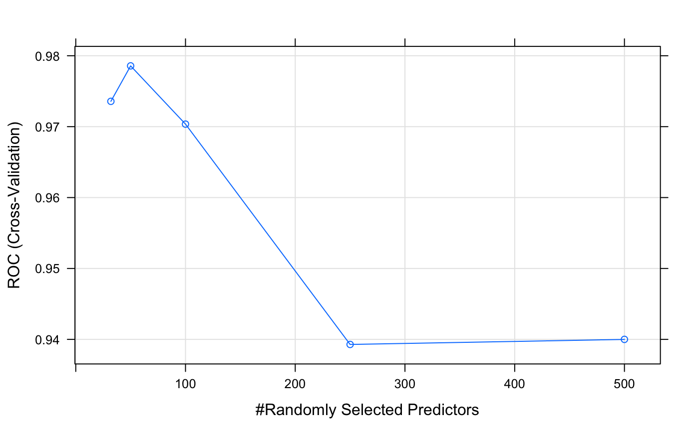
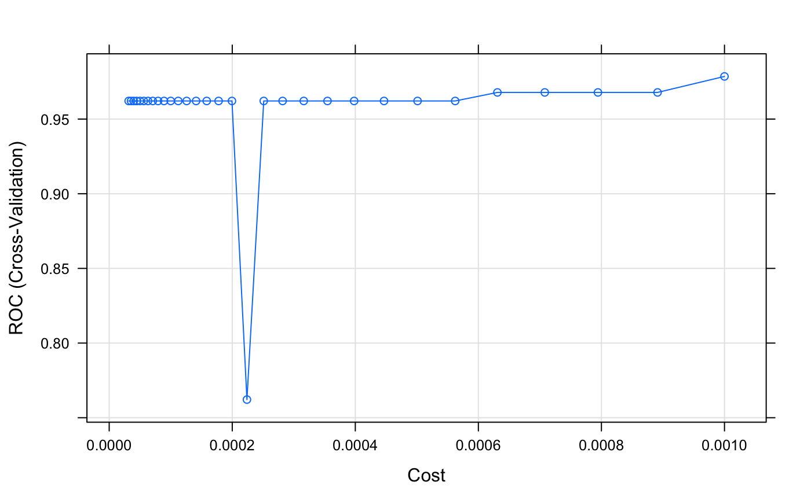

vignettes/docs/Classification_Caret.Rmd
Classification_Caret.RmdLoading data for the classification task. We will be using the 10-chemical subset of the DrugMatrix dataset, and aim to predict the chemicals’ carcinogenicity status.
data(dm10)
## DrugMatrix dataset comprising 10 drugs plus controls
DM <- dm10
## show chemicals and their numbers
table(pData(DM)[,"CHEMICAL"])##
## 2,3,7,8-TETRACHLORODIBENZO-P-DIOXIN
## 225 9
## ACETAMINOPHEN ASPIRIN
## 3 24
## DIAZEPAM DOXORUBICIN
## 8 21
## IBUPROFEN LOVASTATIN
## 9 18
## ROSIGLITAZONE TAMOXIFEN
## 6 9
## TESTOSTERONE
## 6##
## NON-CARC CARCINOGEN <NA>
## 63 50 225
## exclude the controls (the ones with carcinogenicity status==NA)
DM1 <- DM[,!is.na(pData(DM)[,"Carcinogen_liv"])]
DM1$Carcinogen_liv <- droplevels(DM1$Carcinogen_liv)
table(pData(DM1)[,"Carcinogen_liv"],exclude=NULL)##
## NON-CARC CARCINOGEN
## 63 50
## carry out (drastic) variation filtering
DM1000 <- variationFilter(DM1,ngenes=1000,score="mad",do.plot=FALSE)## Variation filtering based on mad .. done.
## Selecting top 1000 by mad .. done, 1000 genes selected.
dim(DM1000)## Features Samples
## 1000 113After having uploaded and properly processed the data, we start by visualizing them with a heatmap (see Rmodule_heatmap.Rmd).
library(ComplexHeatmap)
library(circlize)
DMscaled <- scale_row(DM1000)
hm.annotation <- HeatmapAnnotation(
CARCINOGEN=DMscaled$Carcinogen_liv,
GTOX=as.factor(DMscaled$GenTox),
na_col="ghostwhite",
col=list(CARCINOGEN=c("NON-CARC"="green",CARCINOGEN="red"),
GTOX=c('0'="orange",'1'="purple"))
)
Heatmap(Biobase::exprs(DMscaled),
name="expression",
col=colorRamp2(c(-3, 0, 3), c("#072448", "white", "#ff6150")),
top_annotation=hm.annotation,
cluster_rows=TRUE,
cluster_columns=TRUE,
clustering_distance_rows="euclidean",
clustering_method_rows="ward.D",
clustering_distance_columns="euclidean",
clustering_method_columns="ward.D",
column_split=6,
show_parent_dend_line=TRUE,
row_title="",
show_column_names=FALSE,
show_row_names=FALSE)
Here, we perform the data partition into discovery and validation sets (alternatively, into train and test sets).
We start by simplifying the phenotype labels.
set.seed(3456) # for reproducible results
## some renaming to make data handling simpler
DM1000$CHEMICAL <- factor(DM1000$CHEMICAL) # ensuring phenoype is a factor
DM1000$Carcinogen_liv <- factor(DM1000$Carcinogen_liv) # ditto
levels(DM1000$Carcinogen_liv)[levels(DM1000$Carcinogen_liv)=="NON-CARC"] <- "noncarc"
levels(DM1000$Carcinogen_liv)[levels(DM1000$Carcinogen_liv)=="CARCINOGEN"] <- "carc"
table(pData(DM1000)[,c( "CHEMICAL", "Carcinogen_liv")]) # show composition## Carcinogen_liv
## CHEMICAL noncarc carc
## 2,3,7,8-TETRACHLORODIBENZO-P-DIOXIN 0 9
## ACETAMINOPHEN 3 0
## ASPIRIN 24 0
## DIAZEPAM 0 8
## DOXORUBICIN 21 0
## IBUPROFEN 9 0
## LOVASTATIN 0 18
## ROSIGLITAZONE 6 0
## TAMOXIFEN 0 9
## TESTOSTERONE 0 6We then perform the stratified partition, whereby stratified means that both subsets should have a relatively equal representation of the two classes (‘noncar’ and ‘carc’).
Also, notice that there is an additional level of complexity here, because we have multiple replicates for each chemical. Hence, if we were to carry out the split ‘naively’, we might end up with representative of the same chemicals both in the discovery and validation set, which would not be appropriate (it would be ‘cheating’).
To address this issue, we carry out the partition at the chemical level, rather than the sample level. That is, we partition the chemicals into a discovery and validation set, so that all the replicates of a given chemical will be assigned to either the discovery or the validation set.
## data partitioning into discovery and validation set
CHEMICALGROUP <- pData(DM1000)[!duplicated(pData(DM1000)$CHEMICAL),c("CHEMICAL", "Carcinogen_liv")]
discoveryCHEMICALindex <- createDataPartition(CHEMICALGROUP$Carcinogen_liv, p=0.6, list=FALSE, times=1)
discoveryCHEMICAL <- CHEMICALGROUP$CHEMICAL[discoveryCHEMICALindex]
validationCHEMICAL <- CHEMICALGROUP$CHEMICAL[-discoveryCHEMICALindex]
## split data into discovery and validation set (all replicates belong to one or the other)
DM1000discovery <- DM1000[,DM1000$CHEMICAL %in% discoveryCHEMICAL]
DM1000validation <- DM1000[,DM1000$CHEMICAL %in% validationCHEMICAL]
discovery <- data.frame(t(Biobase::exprs(DM1000discovery)))
discoveryLab <- factor(DM1000discovery$Carcinogen_liv, levels = c("noncarc", "carc"))
validation <- data.frame(t(Biobase::exprs(DM1000validation)))
validationLab <- factor(DM1000validation$Carcinogen_liv, levels = c("noncarc", "carc"))We now fit a KNN classifier. We evaluate several versions, based on different numbers of neighbors, and evaluate the performance of each by 5-fold cross-validation (cv).
## KNN with 5x cross validation
fitControl <- trainControl(method="cv",
number=5,
classProbs=T,
summaryFunction=twoClassSummary)
set.seed(1234) # for reproducible results
## evaluate on train set based on area under the ROC (AUC)
KNN <- train(x=discovery,
y=discoveryLab,
method="knn",
trControl=fitControl,
tuneGrid=expand.grid(.k=c(3,5,7,9,20)),
metric='ROC')
## summary of performance across each value of tuning parameters
KNN## k-Nearest Neighbors
##
## 63 samples
## 1000 predictors
## 2 classes: 'noncarc', 'carc'
##
## No pre-processing
## Resampling: Cross-Validated (5 fold)
## Summary of sample sizes: 51, 51, 50, 50, 50
## Resampling results across tuning parameters:
##
## k ROC Sens Spec
## 3 0.9521429 0.9714286 0.92
## 5 0.9717857 0.9464286 0.96
## 7 0.9797321 0.9464286 1.00
## 9 0.9750000 0.9464286 0.88
## 20 0.8258929 0.7964286 0.47
##
## ROC was used to select the optimal model using the largest value.
## The final value used for the model was k = 7.
plot(KNN, metric = "ROC")
## show the parameters that yield the most accurate classifier (as estimated by cv)
KNN$bestTune## k
## 3 7
#final model used and performance across test sets of each fold
KNN$finalModel## 7-nearest neighbor model
## Training set outcome distribution:
##
## noncarc carc
## 39 24WARNING: It should be noted that the internal cv performed by caret in this case does not take into account the problem of multiple replicates per chemical. Thus the cv estimates of accuracy (based on AUC) will in general be over-optimistic. However, we will hope that all the estimates will be equally over-optimistic, thus allowing us to select the best model parameterization.
After having selected the “best” classifier, we can now apply it to the validation set.
## predicting the validation data:
pred <- predict(KNN,validation)
## or predicting using the probabilities (nice because you can get ROC)
probs <- extractProb(list(model=KNN),
testX=validation,
testY=validationLab)
## removing trainings data
probs <- probs[probs$dataType!='Training',]
## Make sure the levels are appropriate for twoClassSummary(), ie case group is first level
levs <- c("carc", "noncarc")
probs$obs <- factor(probs$obs, levels = levs)
probs$pred <- factor(probs$pred, levels = levs)
## Calculating Accuracy
mean(probs$obs==probs$pred)## [1] 0.48
## see classification prob for each sample in validation set
## pred column shows model predicted label if cutoff for calling label = 0.5
table(probs$obs, probs$pred)##
## carc noncarc
## carc 3 23
## noncarc 3 21
## summary of performance result on validation set
twoClassSummary(probs, lev = levels(probs$obs))## ROC Sens Spec
## 0.3421474 0.1153846 0.8750000Next we fit a Random Forest classifier. We evaluate several versions, based on different numbers of random features to be used for each tree, and evaluate the performance of each by 5-fold cross-validation (cv). Note, that a commonly features per tree is \(\sqrt{total\; features}\), in this case \(\sqrt{total\; features} = \sqrt{1000} \sim 32\).
## RandomForest with 5x cross validation
fitControl <- trainControl(method="cv",
number=5,
classProbs=T,
summaryFunction=twoClassSummary)
set.seed(1234) # for reproducible results
## evaluate on train set based on area under the ROC (AUC)
RF <- train(x=discovery,
y=discoveryLab,
method="rf",
trControl=fitControl,
tuneGrid=expand.grid(mtry=c(32, 50, 100, 250, 500)),
metric='ROC')
## summary of performance across each value of tuning parameters
RF## Random Forest
##
## 63 samples
## 1000 predictors
## 2 classes: 'noncarc', 'carc'
##
## No pre-processing
## Resampling: Cross-Validated (5 fold)
## Summary of sample sizes: 51, 51, 50, 50, 50
## Resampling results across tuning parameters:
##
## mtry ROC Sens Spec
## 32 0.9735714 0.9714286 0.88
## 50 0.9785714 0.9714286 0.88
## 100 0.9703571 0.9714286 0.88
## 250 0.9392857 0.9464286 0.84
## 500 0.9400000 0.9214286 0.84
##
## ROC was used to select the optimal model using the largest value.
## The final value used for the model was mtry = 50.
plot(RF, metric = "ROC")
## show the parameters that yield the most accurate classifier (as estimated by cv)
RF$bestTune## mtry
## 2 50
#final model used and performance across test sets of each fold
RF$finalModel##
## Call:
## randomForest(x = x, y = y, mtry = param$mtry)
## Type of random forest: classification
## Number of trees: 500
## No. of variables tried at each split: 50
##
## OOB estimate of error rate: 6.35%
## Confusion matrix:
## noncarc carc class.error
## noncarc 38 1 0.02564103
## carc 3 21 0.12500000All of the classifiers work well on the training data. A nice thing about Random Forests are that they’re performance is fairly robust to different parameter choices We’ll end using use \(\sqrt{total\; features} = \sqrt{1000} \sim 32\) , we can now apply it to the validation set.
## predicting the validation data:
predRF <- predict(RF,validation)
## or predicting using the probabilities (nice because you can get ROC)
probsRF <- extractProb(list(model=RF),
testX=validation,
testY=validationLab)
## removing trainings data
probsRF <- probsRF[probsRF$dataType!='Training',]
## Make sure the levels are appropriate for twoClassSummary(), ie case group is first level
levs <- c("carc", "noncarc")
probsRF$obs <- factor(probsRF$obs, levels = levs)
probsRF$pred <- factor(probsRF$pred, levels = levs)
## Calculating Accuracy
mean(probsRF$obs==probsRF$pred)## [1] 0.4
## see classification prob for each sample in validation set
## pred column shows model predicted label if cutoff for calling label = 0.5
table(probsRF$obs, probsRF$pred)##
## carc noncarc
## carc 0 26
## noncarc 4 20
## summary of performance result on validation set
twoClassSummary(probsRF, lev = levels(probsRF$obs))## ROC Sens Spec
## 0.1762821 0.0000000 0.8333333Next we fit a SVM classifier with a linear. We evaluate several versions, based on different cost parameters, and evaluate the performance of each by 5-fold cross-validation (cv). SVM attempts to separate each group by a hyperplane over all variables by maximizing the distance (or margin) between this hyperplane and the closest points to it. The cost parameter controls the leniency of certain points falling on the wrong side of this hyperplane if it means the margin of the hyperplane to other points to be greater. This is to control overfitting. Large cost parameters don’t allow for any points in the training data to be misclassified.
## SVM with 5x cross validation
fitControl <- trainControl(method="cv",
number=5,
classProbs=T,
summaryFunction=twoClassSummary)
set.seed(1234) # for reproducible results
## evaluate on train set based on area under the ROC (AUC)
SVM <- train(x=discovery,
y=discoveryLab,
method="svmLinear2",
trControl=fitControl,
tuneGrid=expand.grid(cost=10^(seq(-4.5, -3, by = 0.05))),
metric='ROC')
## summary of performance across each value of tuning parameters
SVM## Support Vector Machines with Linear Kernel
##
## 63 samples
## 1000 predictors
## 2 classes: 'noncarc', 'carc'
##
## No pre-processing
## Resampling: Cross-Validated (5 fold)
## Summary of sample sizes: 51, 51, 50, 50, 50
## Resampling results across tuning parameters:
##
## cost ROC Sens Spec
## 3.162278e-05 0.9621429 1.0000000 0.00
## 3.548134e-05 0.9621429 1.0000000 0.00
## 3.981072e-05 0.9621429 1.0000000 0.00
## 4.466836e-05 0.9621429 1.0000000 0.00
## 5.011872e-05 0.9621429 1.0000000 0.00
## 5.623413e-05 0.9621429 1.0000000 0.00
## 6.309573e-05 0.9621429 1.0000000 0.00
## 7.079458e-05 0.9621429 1.0000000 0.00
## 7.943282e-05 0.9621429 1.0000000 0.00
## 8.912509e-05 0.9621429 1.0000000 0.00
## 1.000000e-04 0.9621429 1.0000000 0.00
## 1.122018e-04 0.9621429 1.0000000 0.00
## 1.258925e-04 0.9621429 1.0000000 0.00
## 1.412538e-04 0.9621429 1.0000000 0.00
## 1.584893e-04 0.9621429 1.0000000 0.00
## 1.778279e-04 0.9621429 1.0000000 0.00
## 1.995262e-04 0.9621429 1.0000000 0.00
## 2.238721e-04 0.7621429 1.0000000 0.10
## 2.511886e-04 0.9621429 1.0000000 0.15
## 2.818383e-04 0.9621429 1.0000000 0.19
## 3.162278e-04 0.9621429 1.0000000 0.36
## 3.548134e-04 0.9621429 0.9214286 0.60
## 3.981072e-04 0.9621429 0.9214286 0.84
## 4.466836e-04 0.9621429 0.9464286 0.88
## 5.011872e-04 0.9621429 0.9714286 0.88
## 5.623413e-04 0.9621429 0.9714286 0.88
## 6.309573e-04 0.9678571 0.9714286 0.88
## 7.079458e-04 0.9678571 0.9714286 0.88
## 7.943282e-04 0.9678571 0.9714286 0.92
## 8.912509e-04 0.9678571 0.9714286 0.92
## 1.000000e-03 0.9785714 0.9714286 0.92
##
## ROC was used to select the optimal model using the largest value.
## The final value used for the model was cost = 0.001.
plot(SVM, metric = "ROC")
## show the parameters that yield the most accurate classifier (as estimated by cv)
SVM$bestTune## cost
## 31 0.001
#final model used and performance across test sets of each fold
SVM$finalModel##
## Call:
## svm.default(x = as.matrix(x), y = y, kernel = "linear", cost = param$cost,
## probability = classProbs)
##
##
## Parameters:
## SVM-Type: C-classification
## SVM-Kernel: linear
## cost: 0.001
##
## Number of Support Vectors: 48
## predicting the validation data:
predSVM <- predict(SVM,validation)
## or predicting using the probabilities (nice because you can get ROC)
probsSVM <- extractProb(list(model=SVM),
testX=validation,
testY=validationLab)
## removing trainings data
probsSVM <- probsSVM[probsSVM$dataType!='Training',]
## Make sure the levels are appropriate for twoClassSummary(), ie case group is first level
levs <- c("carc", "noncarc")
probsSVM$obs <- factor(probsSVM$obs, levels = levs)
probsSVM$pred <- factor(probsSVM$pred, levels = levs)
## Calculating Accuracy
mean(probsSVM$obs==probsSVM$pred)## [1] 0.36
## see classification prob for each sample in validation set
## pred column shows model predicted label if cutoff for calling label = 0.5
table(probsSVM$obs, probsSVM$pred)##
## carc noncarc
## carc 6 20
## noncarc 12 12
## summary of performance result on validation set
twoClassSummary(probsSVM, lev = levels(probsSVM$obs))## ROC Sens Spec
## 0.1858974 0.2307692 0.5000000